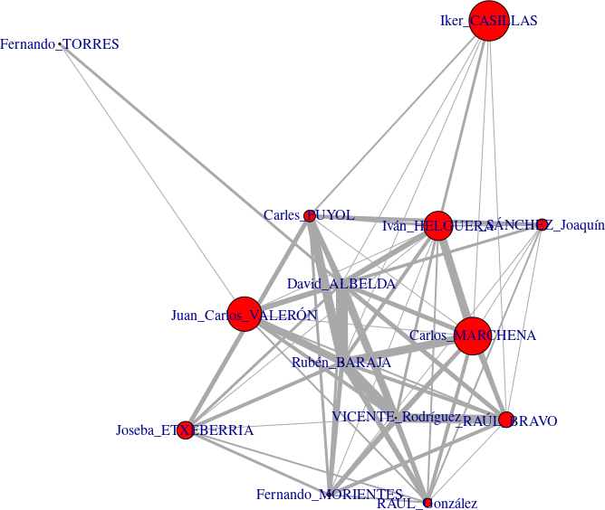

Pass it around
Complex networks for soccer analysis
... and prediction
ICAITA 2022; University of Mascara, Algeria
JJ Merelo, university of Granada @jjmerelo
JJ Merelo, University of Granada, Spain, software developer, open source/open science advocate
Football fan
Football is football
And it will always be
Predict the result
Bets
Peace of mind
Sport decisions
Explaining the result is important
Sports journalism
Sport decisions
It's tough to make predictions; especially about the future
Yogi Berra, baseball player

Yet people keep trying...
Are long passes better than short?
Charles Reep believed they were
seven out of nine goals came from moves of three passes or fewer; moves starting with a long pass from your own half meant a goal was twice as likely to be scored when compared to using only short passes to progress up the field;
From BBC article
Lobanovsky: "Two subsystems of eleven elements"
Team play viewed as a complex system

De Nationaal Archief, Den Haag, Rijksfotoarchief: Fotocollectie Algemeen Nederlands Fotopersbureau (ANEFO), 1945-1989 - negatiefstroken zwart/wit, nummer toegang 2.24.01.05, bestanddeelnummer 927-8886 - <a rel="nofollow" class="external free" href="http://www.gahetna.nl/over-ons/open-data">http://www.gahetna.nl/over-ons/open-data</a> Nationaal Archief Fotocollectie Anefo, CC0, Enlace
The small world of tiki-taka
Total football, possession and local superiority

De Football.ua, CC BY-SA
3.0, Enlace
Football is a passing game
And passes form a network
Understand the network to understand the game
Vertices/nodes == players
(Undirected) Edges == passes
Visualization helps: Spain Euro 2004
Individual-level centrality measures
Understand the key players
Game creators/organizers/scorers
Betweenness: is the player in the middle of things?
How often it is in the path from one player to another: assistance
Flow betweenness: How does the player regulate flow of passes
Eigenvector: being along the main axis of movement
Spain vs. Greece, Euro 2004: 1:1
The case of the vanishing midfielders
Mid-level measures
Clustering coefficient: transitivity ⇒ small-world
Communities, core-periphery
The Greek phalanx (vs. Spain, Euro 2004)
Greece vs. Spain: good positions?
Macro-level measures
Average measurements and their differences
Edge/passes entropy
🇵🇹 Portugal 0 - 1 Greece 🇬🇷
Entropy 🇵🇹 3.76 - 3.51 🇬🇷
Groups phase: 🇵🇹 4.12 (1) - (2) 4.00 🇬🇷

Is there a good way to explain result?
Micro, meso or macro?
Many different kind of measures
At different levels
Difficult to know which one, or combination of them, will explain/predict result
How the ball flows is important
Let's look at flow betweenness
Moderately significant + positive coefficient in order to win, try higher FBC than the enemy has
Lee, Borgatti, Molina & Merelo, 2005
First lesson: don't look at
goals: xG
Look at expected occassions
We don't always have that information...
Expected goals are a posteriori, and since their models are based on on-the-field sequences, it's difficult to predict in advanceBack to Yogi Berra
There does not seem to be a way to uniquely describe a team
Past passes are bad predictors for future passes
Mais...
Les performances individuelles, ce n'est pas le plus important. On gagne et on perd en équipe.
Zinedine Zidane